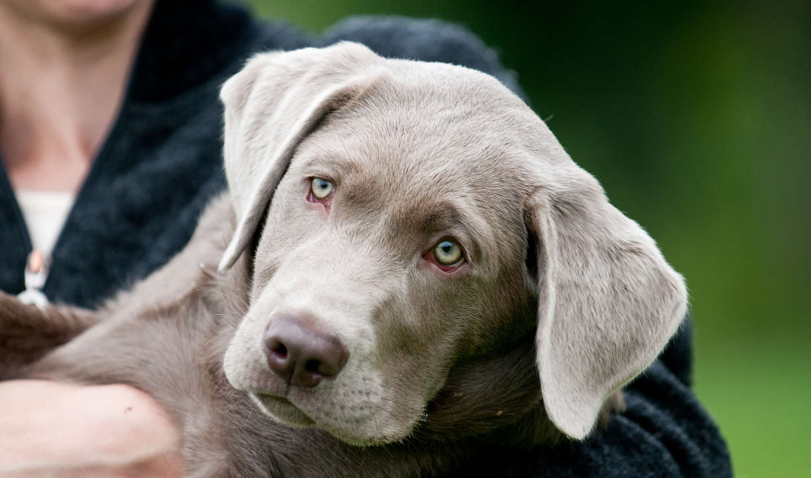
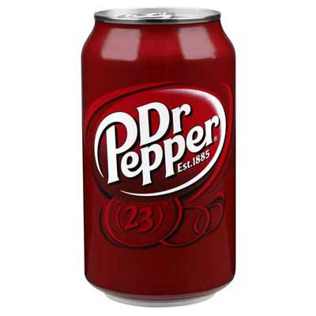
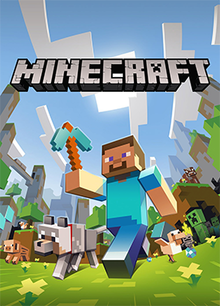
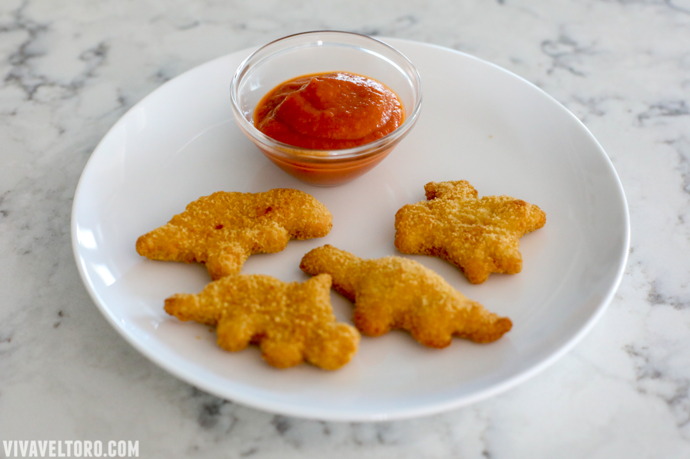
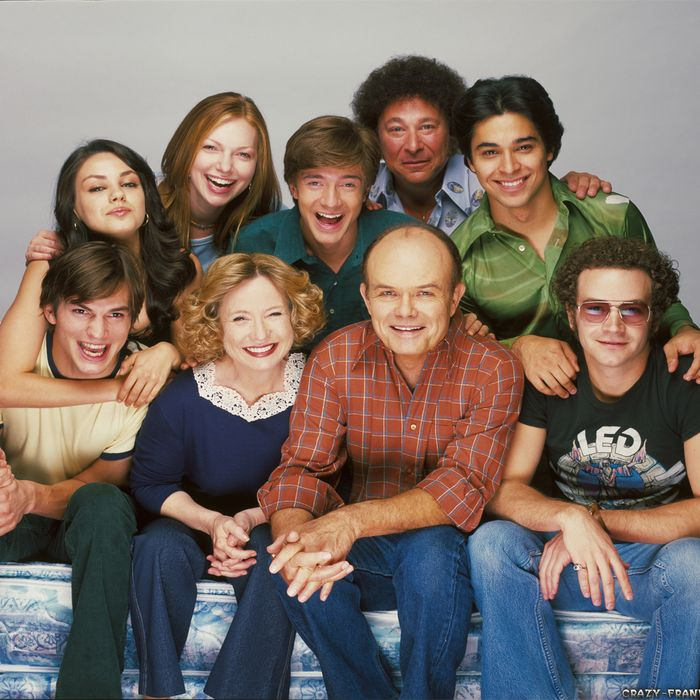
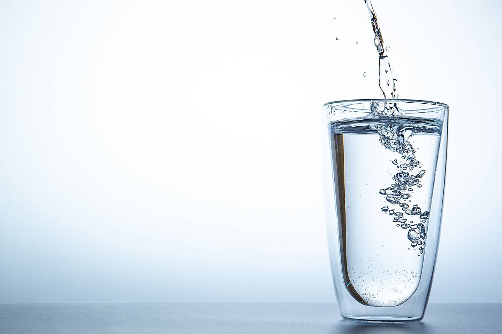
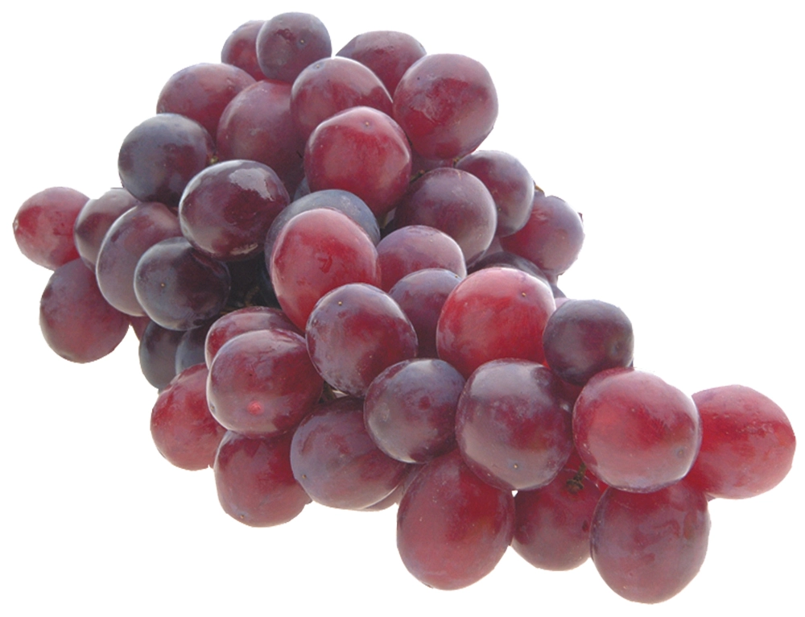
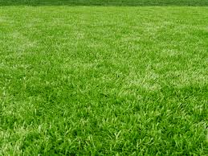
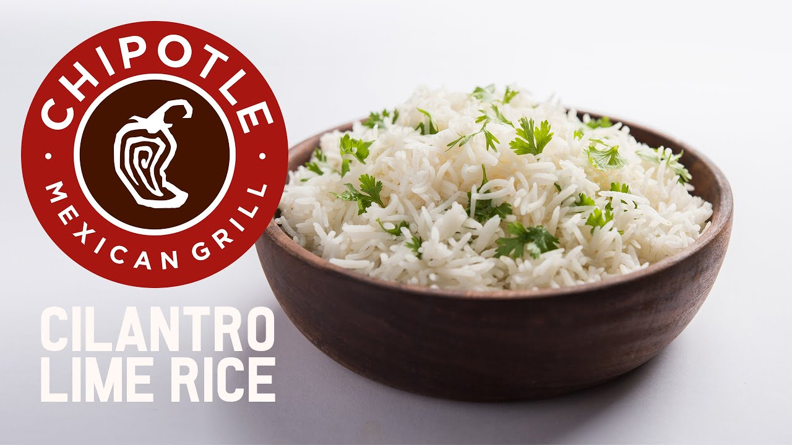
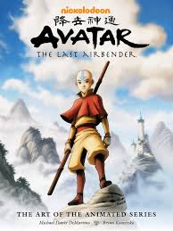

Labs are one of the smartest dog breeds. Labs love the water. Silver labs come from the recessive gene in the chocolate lab.

Silver LabsDr. Pepper is the best soda. No cap.

Dr. PepperMinecraft is the best game that has ever existed. If you've never heard of/ played Minecraft, you're probably a psychopath. Sorry I only speak the truth.

MinecwaftChicken Nuggets are the best food that has ever been introduced to man kind. The dish is prepared by forming the fresh soft chicken meat into small oval shapes or sometimes even into the shape of a prehistoric reptile. The chicken is then tossed in bread crumbs and a light coating is applied. The chicken is then fried until it is a light golden color. Once the is cooked it is served on a platter with a delicious tomato aoli.

Chicken NuggiesQuality show about a group of kids in the seventies. Made in the early 2000's.

That 70's ShowI mean, water is kinda cool. I think we need it to like live, or something like that. Ya know?

wawaGrapes are lowkey kinda fire. We use them to make so much stuff like grape juice, raisins, and you can just eat them too.

Liquid Filled RaisinsGrass is really cool and actually does a lot for the environment. Grass provides a habitat for animals and bugs and some animals eat it.

GrassChipotle rice is straight gas, its so good. They mix the perfect amount of cilantro and lime in there and its just *chef's kiss*. 10/10 would recomend.

Gas RecipeAvatar the Last Airbender is probably the best show Nickelodeon ever made. It is a story about a boy named Aang who is the last air bender and is the avatar. Aang must restore balance to the whole world and save the nations from the fire nation.

Watch ATLA